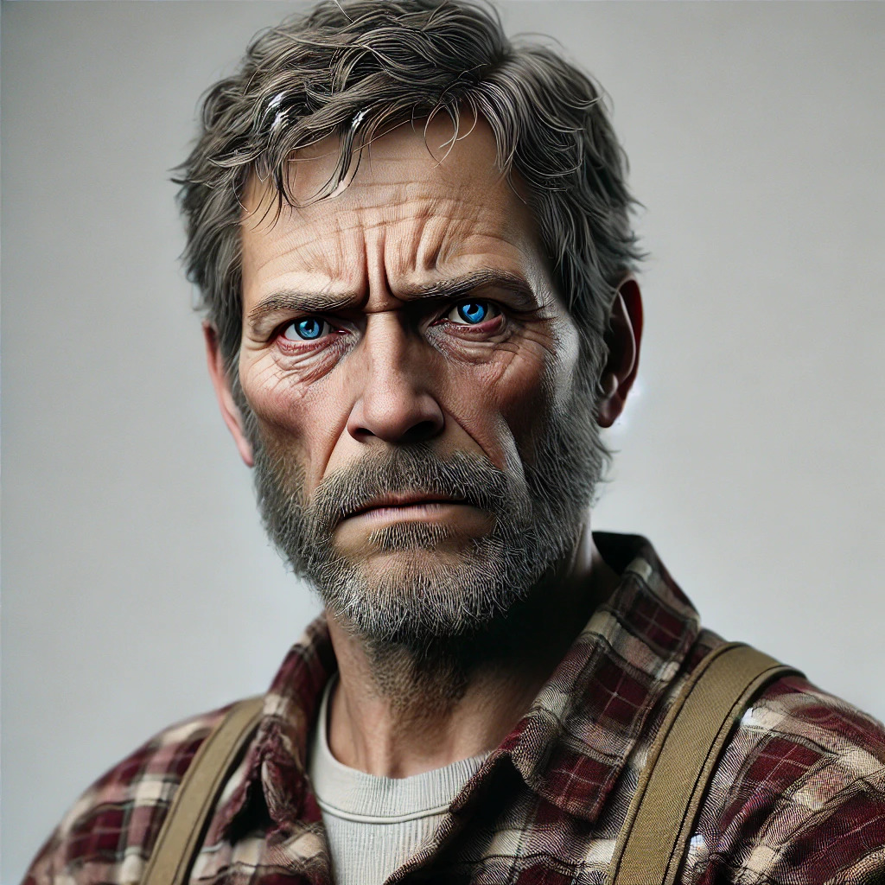

Franze Weidmann

(AI generiertes Bild)
Age:
56
Occupation:
Farmer
Location:
Hirtshals
Role:
Tourist
Bio:
Uses the ferry when he goes to his palace in Lavrik. He hates technology and misses the "good old times". Has never used a pc for anything else then browsing and writing. Has a family with two kids and his wife.
Goals:
- Go to his palace without having a mental break-down
- Have a non-horrible experience using tech
Frustrations:
- Bad quality
- So many options I don't need
Hans Zimmermann
(AI generiertes Bild)
Age:
22
Occupation:
Metalworker Apprentice
Location:
Hirtshals
Role:
Average Commuter
Bio:
Uses the ferry to get to his work on a daily basis. He doesn't want to spend any unnecessary time on his daily commuting. He does know how to use a device, but he is not a tech-nerd. He owns a motorcycle.
Goals:
- Be as quick as possible at the desired goal
- Have an easy experience using tech
Frustrations:
- Poor quality
- Unintuitive user interface